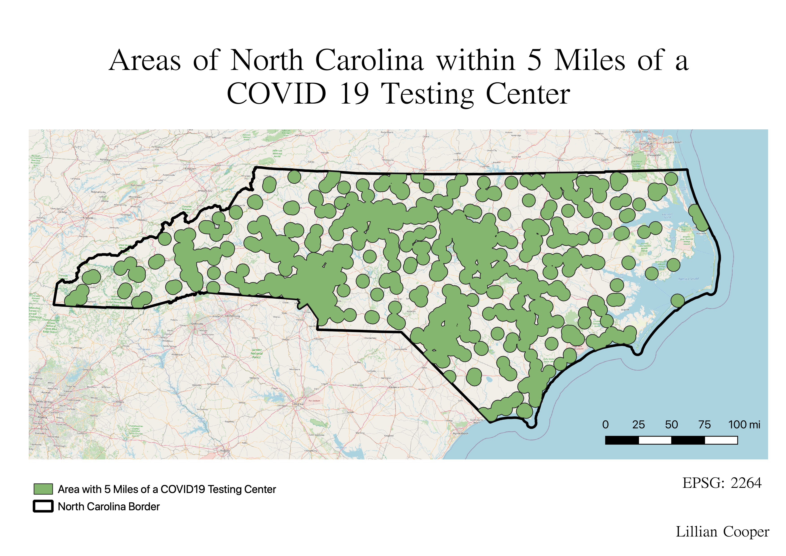

Homework 10: Geoprocessing Analysis
Lillian Cooper
What areas of North Carolina are within 5 miles of a Covid 19 testing center?
The following map displays areas of North Carolina that are within five miles of a COVID 19 testing center. The testing centers were plotted using data from URISA's GISCorps registry of COVID 19 testing centers. Multiple geoprocessing techniques were used to create this map. First, an intersection was created between the North Carolina polygon and the testing center point layer to eliminate all testing centers outside of the state. Next, a five mile buffer was created around each testing center in North Carolina. Then, a dissolve was applied to the buffer to eliminate redundant lines where the buffer overlapped. Finally, an intersection was created between the North Carolina polygon and the dissolved buffer to eliminate portions of the buffer that extended beyond the state boundary.

Data used for this project
North Carolina Shapefile - Census.gov
National Testing Centers - URISA's GISCorps
Intersection of state polygon and testing center point layer (geoJSON)
Testing center buffer (geoJSON)
Dissolve of testing center buffer (geoJSON)
Intersection of state polygon and dissolved testing center buffer (geoJSON)